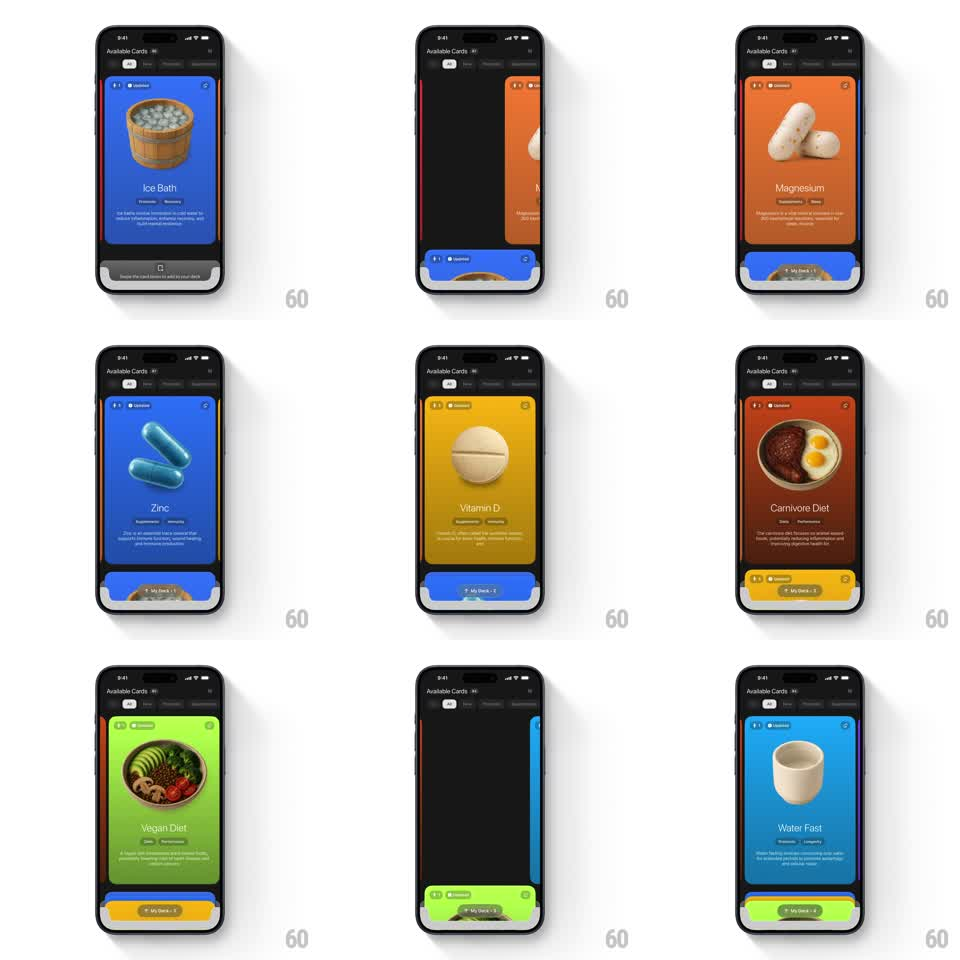

Media
Frame-by-frame

Rebuild this interaction 1:1: Longevity's deck swipe - full-screen protocol cards (Ice Bath, Magnesium, Zinc, Carnivore Diet, Vegan Diet, Water Fast) get swiped down off the stage and shrink into the "My Deck" mini-stack at the bottom as the next card slides up to take their place.

Rebuild this interaction 1:1: Longevity's deck swipe - full-screen protocol cards (Ice Bath, Magnesium, Zinc, Carnivore Diet, Vegan Diet, Water Fast) get swiped down off the stage and shrink into the "My Deck" mini-stack at the bottom as the next card slides up to take their place. ## Integration Integration: stack-agnostic spec - springs given as stiffness/damping, timed motions as duration + curve; map every value to your framework and animation library of choice. ## Scene Dark screen: "Available Cards" header with count and filter chips, a full-bleed colored card (product render, name, tags, description), and a bottom tray labeled "My Deck" holding miniature card thumbnails with a count. Card colors are per-protocol: Ice Bath blue, Magnesium orange, Zinc teal, Carnivore brown-red, Vegan green, Water Fast light blue. ## Motion spec Pattern: swipe-down-to-collect stack, gesture-driven. - Drag: pulling down moves the card 1:1 with a slight rotation (+-4deg) and scale-down (1 -> 0.9); pulling sideways is ignored. - Commit: past 40% travel, the card accelerates down and shrinks into the tray (300ms, ease-in), landing as a mini thumbnail with a pop (scale 1.1 -> 1, spring ~420/22) and the deck count ticking up. - Advance: the next card slides up from behind (300ms, ease-out, scale 0.94 -> 1) the moment the previous one commits. - Reject: below threshold, the card springs back to center (spring ~300/20). ## Calibration - The tray is always visible - cards visibly fly into it, not off-screen. - Each card's mini thumbnail keeps its color and render. ## Reduced motion Cards fade down into the tray (250ms); next card fades up. ## Don't miss - The tray counter and thumbnails update the instant the card lands. - The header count decrements in sync with each collected card.